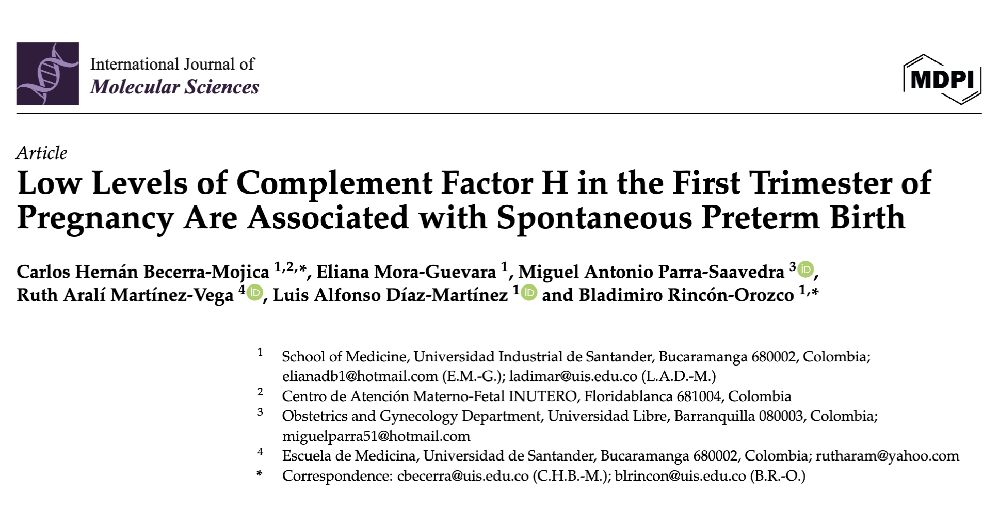
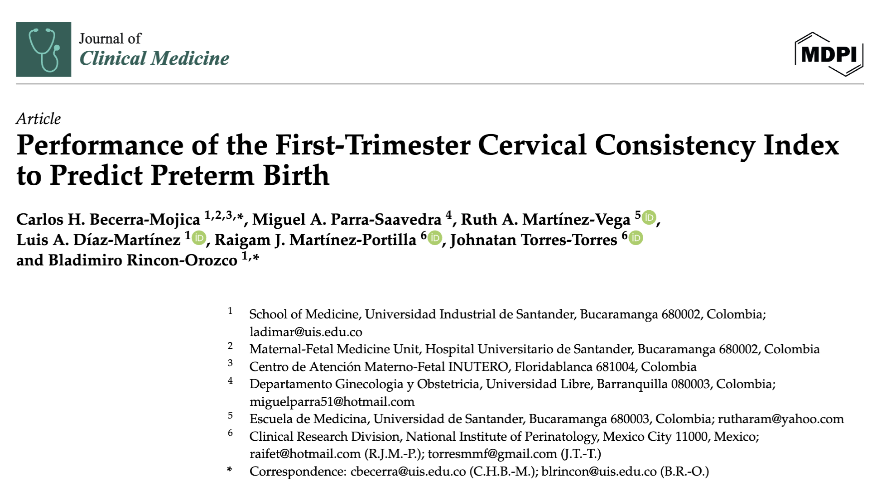

Estimación temprana del riesgo de parto pretérmino mediante biomarcadores maternos del primer trimestre
Esta herramienta permite estimar el riesgo individual de parto pretérmino mediante un modelo de regresión logística desarrollado a partir de factores clínicos maternos, el Índice de Consistencia Cervical (CCI) y los niveles séricos del Factor H del complemento evaluados durante el primer trimestre del embarazo.
El modelo integra información clínica y biomarcadores con potencial valor pronóstico, proporcionando una aproximación cuantitativa al riesgo obstétrico temprano y contribuyendo a la toma de decisiones en medicina materno-fetal.
Haz clic en el siguiente enlace para ingresar a la aplicación Shiny:
Ingresar a la aplicaciónEncargado del proyecto
Especialista en Ginecología y Obstetricia con énfasis en Medicina Materno-Fetal. Docente de la Universidad Industrial de Santander desde 1996 y líder del grupo de investigación GINO (Categoría C, Minciencias). Pionero en la unidad materno-fetal del Hospital Universitario de Santander y en la introducción de la cirugía fetal en Colombia. Actualmente cursa Doctorado en Ciencias Biomédicas, con investigación en predicción temprana del parto pretérmino.
Ver perfil ORCID

Para información académica o científica relacionada con el modelo:
Correo: chbecerra@hotmail.com